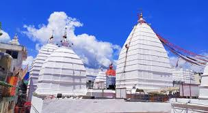
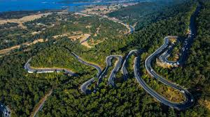
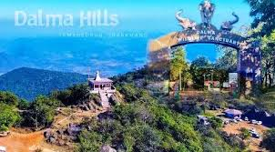
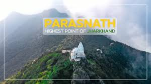

Baidyanath

Jyotirlinga Temple Located in Deoghar, it is one of the twelve sacred Jyotirlingas (shrines of Lord Shiva) and is a major Hindu pilgrimage site.
Ranchi

The capital city, known as the 'City of Waterfalls', featuring spectacular natural sights like Hundru Falls and Jonha Falls, and a serene environment due to its altitude.
Dalma Wildlife Sanctuary

Situated around the Dalma Hills, this sanctuary is known for its population of Indian elephants, offering a rich experience for nature and wildlife lovers.
Parasnath Hills

The highest mountain in the state, it is the most sacred pilgrimage site for Jains, featuring the Shikharji temple complex where 20 of the 24 Jain Tirthankaras attained salvation.
Netarhat
A serene hill station often called the 'Queen of Chota Nagpur', famous for its spectacular sunrise and sunset views, dense forests, and the nearby Lodh Falls (the highest waterfall in the state).